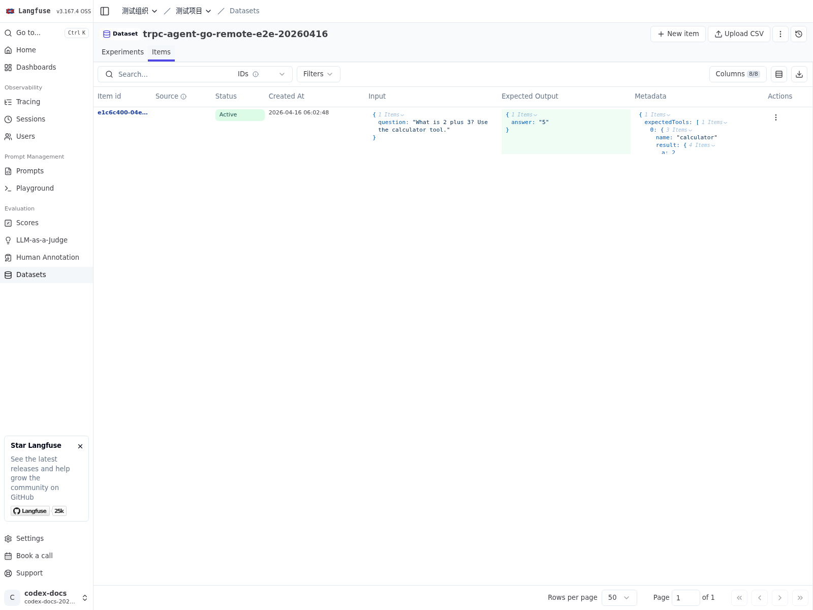
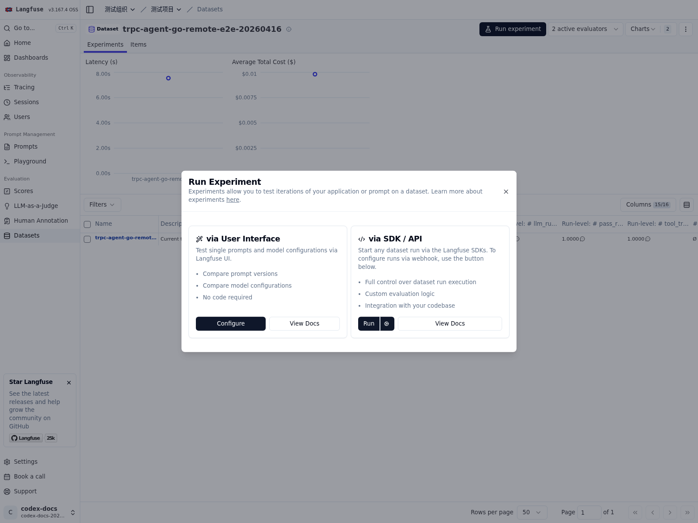
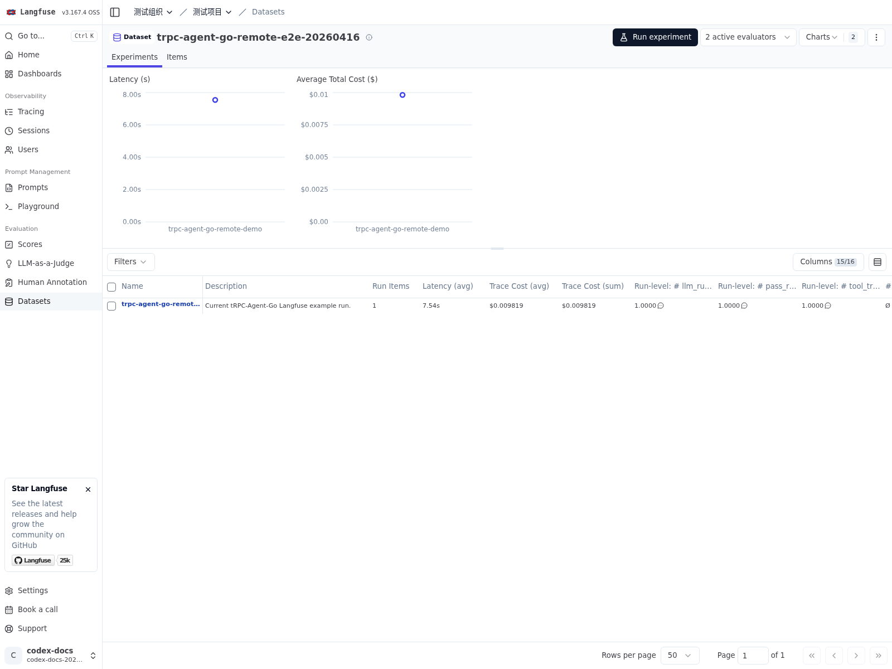

在线评估服务
当评估能力需要被前端页面、测试平台或其他后端服务远程调用时，可以在 AgentEvaluator 之上增加一层 HTTP API 接入。框架在 server/evaluation 中提供了这层服务封装，用于对外暴露评估集查询、评估执行与评估结果查询能力。完整示例见 examples/evaluation/server，接口描述见 server/evaluation/openapi.yaml。
服务接入的核心代码片段如下：
| import (
"trpc.group/trpc-go/trpc-agent-go/evaluation"
"trpc.group/trpc-go/trpc-agent-go/evaluation/evalresult"
evalresultlocal "trpc.group/trpc-go/trpc-agent-go/evaluation/evalresult/local"
"trpc.group/trpc-go/trpc-agent-go/evaluation/evalset"
evalsetlocal "trpc.group/trpc-go/trpc-agent-go/evaluation/evalset/local"
"trpc.group/trpc-go/trpc-agent-go/evaluation/evaluator/registry"
"trpc.group/trpc-go/trpc-agent-go/evaluation/metric"
metriclocal "trpc.group/trpc-go/trpc-agent-go/evaluation/metric/local"
"trpc.group/trpc-go/trpc-agent-go/runner"
sevaluation "trpc.group/trpc-go/trpc-agent-go/server/evaluation"
)
agentRunner := runner.NewRunner(appName, agent)
defer agentRunner.Close()
evalSetManager := evalsetlocal.New(evalset.WithBaseDir(dataDir))
metricManager := metriclocal.New(metric.WithBaseDir(dataDir))
evalResultManager := evalresultlocal.New(evalresult.WithBaseDir(outputDir))
registry := registry.New()
agentEvaluator, err := evaluation.New(
appName,
agentRunner,
evaluation.WithEvalSetManager(evalSetManager),
evaluation.WithMetricManager(metricManager),
evaluation.WithEvalResultManager(evalResultManager),
evaluation.WithRegistry(registry),
)
if err != nil {
log.Fatalf("create agent evaluator: %v", err)
}
defer agentEvaluator.Close()
server, err := sevaluation.New(
sevaluation.WithAppName(appName),
sevaluation.WithBasePath("/evaluation"),
sevaluation.WithAgentEvaluator(agentEvaluator),
sevaluation.WithEvalSetManager(evalSetManager),
sevaluation.WithMetricManager(metricManager),
sevaluation.WithEvalResultManager(evalResultManager),
)
if err != nil {
log.Fatalf("create evaluation server: %v", err)
}
if err := http.ListenAndServe(":8080", server.Handler()); err != nil {
log.Fatalf("listen and serve: %v", err)
}
|
该服务提供 4 类资源：
sets：查询评估集列表与单个评估集详情。metrics：查询评估指标列表与单个评估指标详情。runs：触发一次评估执行。results：查询评估结果列表与单个评估结果详情。
其中，POST /evaluation/runs 的成功响应返回 AgentEvaluator.Evaluate 的结果，位于 evaluationResult 字段中。对于需要页面联调、平台接入或 SDK 生成的场景，建议直接以 OpenAPI 描述作为接口契约。
基于 Langfuse Remote Experiment 评估
server/evaluation/langfuse 提供了 Langfuse Remote Experiment 接入层，用于接收 Langfuse 针对某个数据集发起的远程评估请求，在本地执行 Agent 推理与评估，并将结果回写到 Langfuse。
从使用方式上看，可以把这条链路理解为两部分协作。Langfuse 负责数据集管理、实验触发和结果展示；tRPC-Agent-Go 负责将数据项转换为评测用例、执行本地推理与评估，并将 trace、用例级分数和运行级聚合结果回写到 Langfuse。
因此，接入时需要先准备一套完整的本地评测运行时。通常包括以下几项能力。
AgentEvaluator：负责执行推理和评估。EvalSetManager：负责管理数据集对应的 EvalSet。MetricManager：负责提供数据集对应的评估指标。EvalResultManager：负责保存评估结果。
在此基础上，再通过 langfuse.Handler 将 Langfuse 发起的远程评估请求接入到这套本地评测运行时中。
该接入方式沿用框架原生评测模型，整体映射关系如下。
- Langfuse 数据集对应一份 EvalSet。
- Langfuse 数据项对应一个 EvalCase。
dataset.ID 直接作为 evalSetID。- 默认情况下，一份数据集对应一套评估指标。
这意味着，Langfuse 侧主要提供样本组织和运行入口，真正的评测语义仍然由 tRPC-Agent-Go 维护。数据项如何映射为 EvalCase，由 CaseBuilder 决定；评估指标如何组织和加载，则由 MetricManager 负责。使用默认 local 实现时，metric 通常按 dataset.ID 组织；如果业务需要复用同一套指标，也可以通过自定义 manager 或 locator 调整映射关系。
代码
完整接入代码可参考 examples/evaluation/langfuse。
下面的代码片段以 local managers 为例，展示如何将 langfuse.Handler 挂载到 server/evaluation。
| import (
"trpc.group/trpc-go/trpc-agent-go/evaluation"
"trpc.group/trpc-go/trpc-agent-go/evaluation/evalresult"
evalresultlocal "trpc.group/trpc-go/trpc-agent-go/evaluation/evalresult/local"
"trpc.group/trpc-go/trpc-agent-go/evaluation/evalset"
evalsetlocal "trpc.group/trpc-go/trpc-agent-go/evaluation/evalset/local"
"trpc.group/trpc-go/trpc-agent-go/evaluation/metric"
metriclocal "trpc.group/trpc-go/trpc-agent-go/evaluation/metric/local"
"trpc.group/trpc-go/trpc-agent-go/runner"
sevaluation "trpc.group/trpc-go/trpc-agent-go/server/evaluation"
langfuseeval "trpc.group/trpc-go/trpc-agent-go/server/evaluation/langfuse"
)
agentRunner := runner.NewRunner(appNameValue, newRemoteEvalAgent(*modelName, *streaming))
judgeRunner := runner.NewRunner(appNameValue+"-judge", newJudgeAgent(*modelName))
evalSetManager := evalsetlocal.New(evalset.WithBaseDir(*dataDir))
metricManager := metriclocal.New(metric.WithBaseDir(*dataDir))
evalResultManager := evalresultlocal.New(evalresult.WithBaseDir(*outputDir))
agentEvaluator, err := evaluation.New(
appNameValue,
agentRunner,
evaluation.WithEvalSetManager(evalSetManager),
evaluation.WithMetricManager(metricManager),
evaluation.WithEvalResultManager(evalResultManager),
evaluation.WithJudgeRunner(judgeRunner),
)
if err != nil {
log.Fatalf("create agent evaluator: %v", err)
}
langfuseHandler, err := langfuseeval.New(
appNameValue,
agentEvaluator,
evalSetManager,
metricManager,
evalResultManager,
langfuseeval.WithCaseBuilder(buildCaseSpec),
)
if err != nil {
log.Fatalf("create Langfuse handler: %v", err)
}
server, err := sevaluation.New(
sevaluation.WithAppName(appNameValue),
sevaluation.WithBasePath("/evaluation"),
sevaluation.WithAgentEvaluator(agentEvaluator),
sevaluation.WithEvalSetManager(evalSetManager),
sevaluation.WithEvalResultManager(evalResultManager),
sevaluation.WithRouteRegistrar(langfuseHandler),
)
if err != nil {
log.Fatalf("create evaluation server: %v", err)
}
|
数据格式
Langfuse 允许用户在平台侧自行组织 dataset item 的内容结构，因此数据项中的 input、expectedOutput、metadata 并不要求遵循固定格式。对 tRPC-Agent-Go 而言，评估执行最终仍然需要落到明确的 EvalCase 结构上，因此需要通过 CaseBuilder 在两者之间建立一层转换逻辑。
接入时，可在 CaseBuilder 中完成用户问题、预期答案和工具轨迹的提取，并将平台侧的原始数据映射为本地评测运行时可直接消费的 EvalCase。这样既保留了 Langfuse 数据集定义的灵活性，也将业务数据格式和评测模型之间的边界显式地固定下来。
下面给出一个简单的 question/answer 示例，用于说明数据项如何映射到 EvalCase。
input：
| {
"question": "What is 2 + 3? Use the calculator tool."
}
|
expectedOutput：
metadata.expectedTools 为可选字段，用于工具轨迹评估。
| {
"expectedTools": [
{
"name": "calculator",
"arguments": {
"operation": "add",
"a": 2,
"b": 3
},
"result": {
"operation": "add",
"a": 2,
"b": 3,
"result": 5
}
}
]
}
|
如果业务数据格式不同，可以通过 langfuseeval.WithCaseBuilder(...) 自定义 DatasetItem 到 EvalCase 的转换逻辑。
对应的 CaseBuilder 可以写成如下形式。
| func buildCaseSpec(_ context.Context, item *langfuseeval.DatasetItem) (*langfuseeval.CaseSpec, error) {
question, err := requiredStringField(item.Input, "input", "question")
if err != nil {
return nil, err
}
answer, err := requiredStringField(item.ExpectedOutput, "expectedOutput", "answer")
if err != nil {
return nil, err
}
expectedTools, err := expectedToolsFromMetadata(item.Metadata)
if err != nil {
return nil, err
}
return &langfuseeval.CaseSpec{
DatasetItemID: item.ID,
TraceInput: item.Input,
EvalCase: &evalset.EvalCase{
EvalID: item.ID,
Conversation: []*evalset.Invocation{
{
UserContent: &model.Message{
Role: model.RoleUser,
Content: question,
},
FinalResponse: &model.Message{
Role: model.RoleAssistant,
Content: answer,
},
Tools: expectedTools,
},
},
},
}, nil
}
|
这段转换逻辑的含义是：
- 读取
input.question，作为 UserContent。
- 读取
expectedOutput.answer，作为预期 FinalResponse。
- 读取
metadata.expectedTools，作为预期工具轨迹。
- 使用
item.ID 作为 DatasetItemID 和 EvalID，保证平台数据与本地评测结果可以一一对应。

评估指标 Metric 文件
评估指标继续按照框架原生方式管理。使用默认 local MetricManager 时，由于这里直接使用 dataset.ID 作为 evalSetID，metric 文件通常也按 dataset.ID 命名，目录结构如下。
| data/
langfuse-remote-eval-app/
<dataset-id>.metrics.json
|
按照上述默认组织方式时，目标数据集需要准备对应的 metric 文件，远程评估才能得到有效结果。
如果希望多个数据集复用同一套评估指标，可以通过自定义 Locator 调整 metric 文件的定位方式。例如，将所有数据集统一映射到同一个 shared.metrics.json 文件。
| import (
"path/filepath"
"trpc.group/trpc-go/trpc-agent-go/evaluation/metric"
metriclocal "trpc.group/trpc-go/trpc-agent-go/evaluation/metric/local"
)
type sharedMetricLocator struct{}
func (l *sharedMetricLocator) Build(baseDir, appName, evalSetID string) string {
return filepath.Join(baseDir, appName, "shared.metrics.json")
}
metricManager := metriclocal.New(
metric.WithBaseDir(dataDir),
metric.WithLocator(&sharedMetricLocator{}),
)
|
在这种方式下，不同数据集会共享同一份指标配置文件，适合评测目标一致、仅样本内容不同的场景。
运行方式
当本地评测运行时已经准备完成后，Langfuse Remote Experiment 的接入过程就比较直接：启动评估服务，在 Langfuse 中配置远程评估地址，然后由 Langfuse 发起一次远程评估。
Langfuse 连接信息可以通过 WithBaseURL(...)、WithPublicKey(...)、WithSecretKey(...) 显式传入，也可以通过环境变量提供：
LANGFUSE_BASE_URL：Langfuse 地址，例如 http://127.0.0.1:3000。LANGFUSE_PUBLIC_KEY：Langfuse public key。LANGFUSE_SECRET_KEY：Langfuse secret key。
如果使用官方示例，还需要为示例中的被测 Agent 和 Judge Runner 准备模型配置。下面给出的环境变量和启动命令，即对应官方示例的最小可运行方式。
LANGFUSE_HOST：Langfuse 地址，填写 host:port 形式，例如 127.0.0.1:3000。LANGFUSE_INSECURE：本地明文 HTTP 场景下设为 true。OPENAI_BASE_URL：兼容 OpenAI API 的模型服务地址。OPENAI_API_KEY：被测 Agent 与 Judge Runner 使用的模型密钥。
| cd trpc-agent-go/examples/evaluation/langfuse
export LANGFUSE_HOST="127.0.0.1:3000"
export LANGFUSE_INSECURE="true"
export LANGFUSE_PUBLIC_KEY="pk-lf-xxx"
export LANGFUSE_SECRET_KEY="sk-lf-xxx"
export OPENAI_API_KEY="sk-xxx"
go run . -addr :8088
|
以上命令启动的是官方示例，对应的 webhook 地址如下。
| http://127.0.0.1:8088/evaluation/langfuse/remote-experiment
|
Langfuse Web 页面当前接受 80 或 443 端口的远程评估地址。服务监听 8088 时，通常需要通过反向代理、端口映射或网关对外暴露到 80/443。如果使用的不是官方示例，而是自行搭建的评估服务，也同样适用这条约束。

结果查看
远程评估完成后，Langfuse 中会同时呈现本地评测运行的不同层次结果。
- 每个数据项对应一条 trace。
- trace 下的用例级分数，例如
tool_trajectory_avg_score、llm_rubric_response。
- 数据集运行级聚合分数，例如
pass_rate 与各评估指标的均值。
评估结果的保存方式取决于 EvalResultManager 的实现。使用 local 实现时，结果会写入本地目录，便于离线排查与回归比对。
